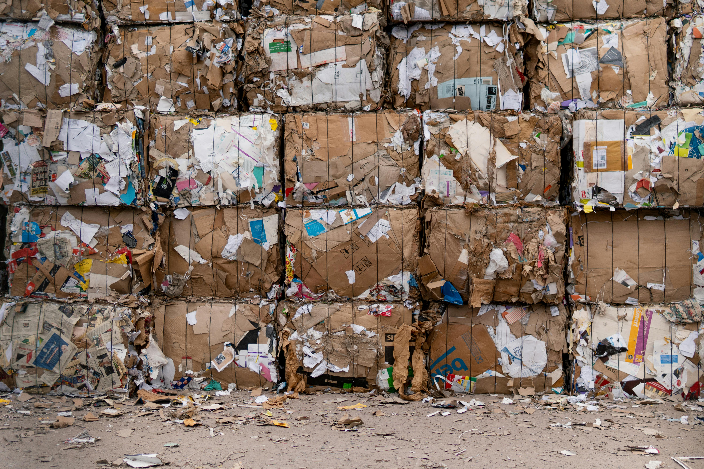

Sejak diterapkan di berbagai daerah, Bank Sampah telah membawa dampak positif yang signifikan. Banyak warga yang sebelumnya tidak peduli terhadap sampah kini aktif memilah dan menyetorkan sampah ke titik pengumpulan.
Selain mengurangi pencemaran lingkungan, program ini juga membuka peluang ekonomi baru. Beberapa warga bahkan menjadikan kegiatan pengumpulan dan pengolahan sampah sebagai sumber penghasilan tambahan.
Anak-anak sekolah mulai belajar tentang pentingnya daur ulang, dan komunitas lokal semakin kompak dalam menjaga kebersihan lingkungan. Bank Sampah bukan sekadar tempat menabung sampah, tapi juga pusat perubahan sosial yang berkelanjutan.
← Kembali ke Beranda